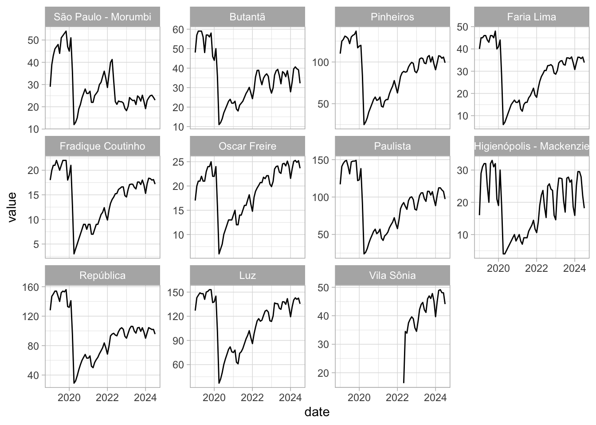

# Libraries
library(rvest)
library(stringr)
library(dplyr)
import::from(xml2, read_html)
import::from(here, here)
import::from(glue, glue)
import::from(pdftools, pdf_text)
import::from(purrr, map2, map_lgl)Line-4 Metro Subway
In this post I show how to webscrape all publicly available information on passenger flow from the Line-4 Metro in São Paulo. This post is part of a larger series where I gather all data on the subway lines in São Paulo.
Subway data in São Paulo
Finding data on the subway lines in São Paulo is not easy. There are currently 5 subway lines in São Paulo, identified by number and color:
Line-1 (Blue)
Line-2 (Green)
Line-3 (Red)
Line-4 (Yellow)
Line-5 (Lilac)
The first three lines are state-owned by the public company METRO. Line-4 is a PPP an privately operated by Via Quatro Mobilidade. Line-5 is also privately operated by ViaMobilidade.
The Data
Passenger flow information is stored in a very unfriendly manner. Monthly passenger flow data is stored in excel tables that are stored in individual pdf files.

Inside each pdf file there is a simple Excel-like table such as the one in the image below.

To extract this data we need to proceed in the following steps:
- Webscrape the page to find all download links for each individual pdf.
- Download all pdfs.
- Import each pdf table, interpret the text and clean the data.
- Compile datasets into meaningful tables.
Downloading
We can use the rvest package to easily find and download all the pdf files.
The chunk of code below finds the links to all pdf files.
# Site url
url <- "https://www.viaquatro.com.br/linha-4-amarela/passageiros-transportados"
# Parse the html
page <- read_html(url)
# Get download links
pdf_links <- page %>%
html_elements(xpath = "//article/ul/li/a") %>%
html_attr("href")
# Get the name of each pdf file
pdf_names <- page %>%
html_elements(xpath = "//article/ul/li/a") %>%
html_attr("title")
pdf_links <- pdf_links[str_detect(pdf_links, "\\.pdf$")]
# Store links and names in a tibble
params <- tibble(
link = pdf_links,
name = pdf_names
)I save the title of each file and the link in a tibble. I also extract some useful information using regex.
# Use regex to extract information from file name
params <- params |>
mutate(
# Find variable name
variable = str_extract(name, ".+(?= - [A-Z0-9])"),
# Remove excess whitespace
variable = str_replace_all(variable, " ", " "),
# Get the date (either in 20xx or %B%Y format)
x1 = str_trim(str_extract(name, "(?<= - )[A-Z0-9].+")),
# Extract year number
year = as.numeric(str_extract(x1, "[0-9]{4}")),
# Extract month label (in portuguese)
month_label = str_extract(x1, "[[:alpha:]]+"),
# Convert to date
ts_date = if_else(
is.na(month_label),
as.Date(str_c(year, "/01/01")),
parse_date(paste(year, month_label, "01", sep = "/"),
format = "%Y/%B/%d",
locale = locale("pt"))
)
)
params <- params |>
arrange(ts_date) |>
arrange(variable)The simple for-loop below downloads all pdf files locally. I include a progress bar, and a simple check to avoid downloading duplicate files. This check also comes in handy if something goes wrong internet-wise.
#> Download all pdf files
fld <- here("static/data/raw/metro_sp/linha_4/")
baseurl <- "https://www.viaquatro.com.br"
pb <- txtProgressBar(max = nrow(params), style = 3)
# Loop across params
for (i in 1:nrow(params)) {
# Define file name
name_file <- janitor::make_clean_names(params[["name"]][i])
# Add pdf extension
name_file <- paste0(name_file, ".pdf")
# Crate file path
destfile <- here(fld, name_file)
# Simple check:
# If downloaded file already exists, skip it
# If not, download the file
if (file.exists(destfile)) {
message(glue("File {name_file} already exists."))
i <- i + 1
} else {
message(glue("Downloading file {name_file}."))
# Link to the pdf file
url <- paste0(baseurl, params[["link"]][i])
# Download the file
download.file(url = url, destfile = destfile, mode = "wb", quiet = TRUE)
# For precaution defines a random time-interval between each download
Sys.sleep(1 + runif(1))
}
setTxtProgressBar(pb, i)
}Data Processing
Extracting tables from pdf can be a challenging task. In another post I showed how to import tables using the pdftools package. This package generally works very well but it fails if the table is saved as an image. In this case, the best approach is to use a deep-learning model or LLM that can recognize patterns in images.
In our case, the older pdf files are stored as images of tables while the newer files are stored as text tables. This means we can use pdftools only for the more recent files.
Functions
To facilitate the import and cleaning process I create several helper functions.
Importing pdfs
# Read pdf using pdf tools and convert to tibble
read_pdf <- function(path) {
tbl <- pdftools::pdf_text(path)
tbl <- stringr::str_split(tbl, "\n")
# Get only the first result
# Assumes each pdf contains only a single table
tbl <- tibble::tibble(text = tbl[[1]])
if (all(tbl == "")) {
warning("No text elements found!")
}
return(tbl)
}Cleaning the tables
# Helper function to extract numbers from text
# Numbers use , as decimal mark and . as thousand mark
get_numbers <- Vectorize(function(text) {
num <- stringr::str_extract(text, "([0-9].+)|([0-9])")
num <- stringr::str_remove(num, "\\.")
num <- as.numeric(stringr::str_replace(num, ",", "."))
return(num)
})
clean_pdf_passenger <- function(dat) {
mes <- lubridate::month(1:12, label = TRUE, abbr = FALSE, locale = "pt_BR")
cat <- c(
"Total", "Média dos Dias Úteis", "Média dos Sábados", "Média dos Domingos",
"Máxima Diária"
)
pat <- paste(str_glue("({cat})"), collapse = "|")
tbl <- dat |>
mutate(
variable = str_remove_all(text, "\\d"),
variable = str_trim(variable),
variable = str_replace_all(variable, " ", ""),
month = str_extract(text, paste(mes, collapse = "|")),
metric = str_extract(text, pat),
value = get_numbers(text)
)
tbl_date <- tbl |>
filter(!is.na(month)) |>
mutate(
date = str_glue("{value}-{month}-01"),
date = parse_date(date, format = "%Y-%B-%d", locale = locale("pt"))
) |>
select(date, year = value)
tbl_value <- tbl |>
filter(!is.na(value), !is.na(metric)) |>
select(metric, value) |>
mutate(value = as.numeric(value))
tbl <- cbind(tbl_date, tbl_value)
return(tbl)
}
clean_pdf_station <- function(dat) {
name_stations <- c(
'Vila Sônia', 'São Paulo - Morumbi', "Butantã", "Pinheiros", "Faria Lima",
"Fradique Coutinho", "Oscar Freire", "Paulista", "Higienópolis - Mackenzie",
"República", "Luz")
pat <- paste(str_glue("({name_stations})"), collapse = "|")
tbl <- dat |>
mutate(
month = str_extract(text, paste(mes, collapse = "|")),
name_station = str_extract(text, pat),
value = get_numbers(text)
)
tbl_date <- tbl |>
filter(!is.na(month)) |>
mutate(
date = str_glue("{value}-{month}-01"),
date = parse_date(date, format = "%Y-%B-%d", locale = locale("pt"))
) |>
select(date, year = value)
tbl_value <- tbl |>
filter(!is.na(value), !is.na(name_station)) |>
select(name_station, value) |>
mutate(value = as.numeric(value))
tbl <- cbind(tbl_date, tbl_value)
return(tbl)
}Final function
import_pdf <- function(path, type) {
stopifnot(any(type %in% c("station", "passenger_entrance", "passenger_transported")))
file <- read_pdf(path)
if (nrow(file) == 1) {
return(NA)
}
if (nrow(file) > 11) {
clean_file <- clean_pdf_station(file)
} else {
clean_file <- clean_pdf_passenger(file)
}
return(clean_file)
}Data Processing
The code below imports all pdf files and cleans the data. I consolidate the information into two tables:
- Passengers - show total passenger flow metrics by month.
- Stations - shows total montlhy passenger flow by station.
# Find path name to all downloaded pdfs
fld <- here::here("static/data/raw/metro_sp/linha_4")
path_pdfs <- list.files(fld, "\\.pdf$", full.names = TRUE)
params <- tibble(
path = path_pdfs
)
params <- params |>
mutate(
name_file = basename(path),
type = case_when(
str_detect(name_file, "^entrada_de_passageiros_pelas") ~ "passenger_entrance",
str_detect(name_file, "estac") ~ "station",
str_detect(name_file, "transportados") ~ "passenger_transported",
TRUE ~ "station"
)
)
pdfs <- params |>
mutate(file = map2(path, type, import_pdf))
valid_files <- pdfs |>
filter(map_lgl(file, is.data.frame))
tbl_passengers <- valid_files |>
filter(type == "passenger_transported") |>
reframe(bind_rows(file)) |>
arrange(date) |>
mutate(name_station = "Total")
tbl_onboarding <- valid_files |>
filter(type == "passenger_entrance") |>
reframe(bind_rows(file)) |>
arrange(date)
# This pdf is wrong!
tbl_onboarding_station <- tbl_onboarding |>
filter(!is.na(name_station)) |>
mutate(metric = "Média dos Dias Úteis")
tbl_onboarding <- tbl_onboarding |>
filter(is.na(name_station)) |>
mutate(name_station = "Total")
tbl_passengers <- bind_rows(
list(
passenger_transported = tbl_passengers,
passenger_entrance = tbl_onboarding
),
.id = "variable")
tbl_station <- valid_files |>
filter(type == "station") |>
reframe(bind_rows(file)) |>
arrange(date)The passenger table shows various passenger flow metrics by month.
slice_tail(passenger, n = 10) |>
gt() |>
opt_stylize(style = 6)| variable | date | year | metric | value | name_station |
|---|---|---|---|---|---|
| passenger_entrance | 2024-06-01 | 2024 | Total | 6135.54 | Total |
| passenger_entrance | 2024-06-01 | 2024 | Média dos Dias Úteis | 204.52 | Total |
| passenger_entrance | 2024-06-01 | 2024 | Média dos Sábados | 106.84 | Total |
| passenger_entrance | 2024-06-01 | 2024 | Média dos Domingos | 66.72 | Total |
| passenger_entrance | 2024-06-01 | 2024 | Máxima Diária | 218.21 | Total |
| passenger_entrance | 2024-07-01 | 2024 | Total | 5908.16 | Total |
| passenger_entrance | 2024-07-01 | 2024 | Média dos Dias Úteis | 183.84 | Total |
| passenger_entrance | 2024-07-01 | 2024 | Média dos Sábados | 102.30 | Total |
| passenger_entrance | 2024-07-01 | 2024 | Média dos Domingos | 58.12 | Total |
| passenger_entrance | 2024-07-01 | 2024 | Máxima Diária | 207.26 | Total |
The station table show total passenger flow by month (in thousands).
slice_tail(station, n = 11) |>
gt() |>
opt_stylize(style = 6)Visualizing
A good way to check our results is to visualize the data. A more detailed visualization can be found in my other post.
Total monthly passnger flow
The plot below shows the total amount of monthly passengers transported by the Line-4 metro. Visually, the data seems coherent. The big drop in the series coincides with the restrictive measures imposed in the first semester of 2020 as a response to the Covid-19 pandemic.
Code
passenger |>
filter(variable == "passenger_transported", metric == "Total") |>
ggplot(aes(date, value)) +
geom_line() +
geom_point() +
theme_light()Passenger flow by station
The plot below shows the total amount of monthly passengers transported by the Line-4 metro by station. Visually, the data seems coherent.
Code
station |>
filter(date >= as.Date("2019-01-01")) |>
mutate(name_station = factor(name_station, levels = unique(station$name_station))) |>
ggplot(aes(x = date, y = value)) +
geom_line() +
facet_wrap(vars(name_station), scales = "free_y") +
theme_light()
The data
The final tables can be downloaded in the links below: